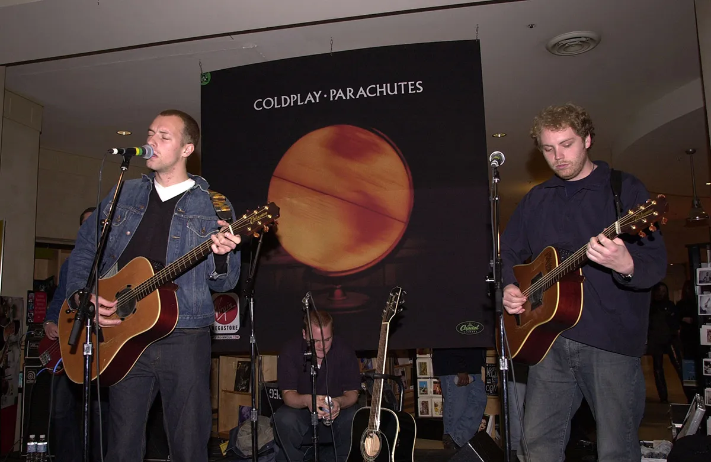

Historia de Coldplay
Coldplay es una banda británica de rock alternativo formada en 1996 en Londres. Sus miembros son Chris Martin (voz y piano), Jonny Buckland (guitarra), Guy Berryman (bajo) y Will Champion (batería). Alcanzaron la fama mundial en el año 2000 con su sencillo Yellow, parte de su álbum debut Parachutes. Desde entonces, han lanzado álbumes icónicos como A Rush of Blood to the Head (2002), Viva la Vida or Death and All His Friends (2008), Music of the Spheres (2021) y Moon Music (2024), explorando diferentes estilos y colaborando con artistas como Beyoncé y BTS. Su sonido combina rock melódico, pop y elementos electrónicos, lo que los ha convertido en una de las bandas más exitosas del siglo XXI. Coldplay es conocido por sus letras emotivas, sus conciertos espectaculares llenos de luces y efectos visuales, y su compromiso con causas sociales y ambientales. Han ganado múltiples premios Grammy y Brit Awards, consolidándose como una de las bandas más influyentes de su generación.
Coldplay sigue siendo una de las bandas más influyentes y queridas del mundo. Con más de dos décadas de carrera, han evolucionado su estilo mientras se mantienen en la cima de la música global. Hoy en día, su sonido combina rock, pop y elementos electrónicos, ofreciendo canciones llenas de emoción y energía. Sus conciertos son considerados de los más espectaculares en la actualidad. Con un increíble despliegue de luces, efectos visuales y pulseras LED sincronizadas, cada espectáculo se convierte en una experiencia mágica e inmersiva. Además, Coldplay transmite un mensaje de amor, unidad y esperanza en cada presentación, conectando con millones de fans en todo el mundo. Comprometidos con el medio ambiente, la banda ha implementado iniciativas sostenibles en sus giras, reduciendo emisiones de carbono y utilizando energías renovables. Con su última gira y nuevos proyectos en camino, Coldplay sigue demostrando por qué es una de las bandas más importantes en la historia de la música.

Recientemente el 4 de octubre de 2024, Coldplay lanzó su décimo álbum de estudio, Moon Music, que sirve como secuela de su álbum de 2021, Music of the Spheres. Este nuevo trabajo fue parcialmente grabado en el estudio Punta Paloma en Tarifa, España, durante julio y agosto de 2024, mientras la banda realizaba presentaciones en Roma, Düsseldorf y Helsinki. El álbum fusiona elementos de pop rock con influencias de funk, afrobeat y música electrónica, ofreciendo una experiencia sonora diversa y contemporánea. Colaboraciones destacadas incluyen a artistas como Burna Boy, Little Simz, Elyanna, Tini y Ayra Starr. La portada del álbum presenta una fotografía de un arco lunar capturada por el fotógrafo argentino Matías Alonso Revelli en 2020. Además, Coldplay ha implementado iniciativas sostenibles en la producción física del álbum, utilizando materiales reciclados para CDs y vinilos, reduciendo significativamente el uso de plástico virgen. Comercialmente, Moon Music ha alcanzado el número uno en 16 países, incluyendo el Reino Unido y Estados Unidos, consolidando a Coldplay como una de las bandas más exitosas a nivel mundial.